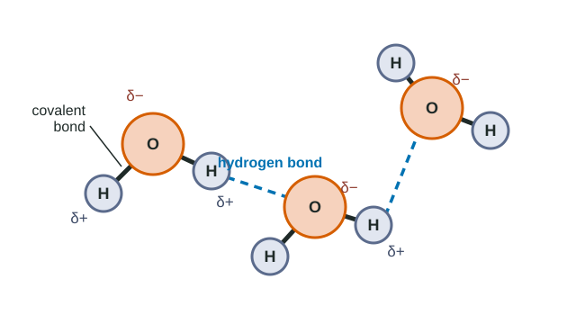
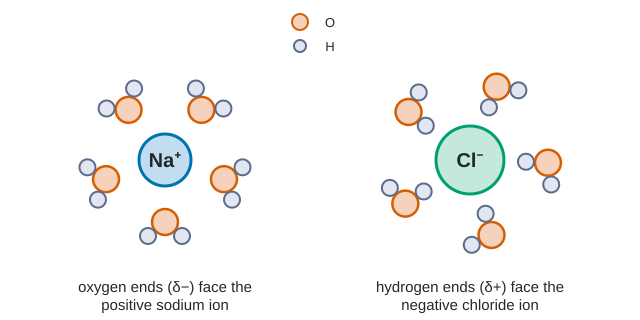

A typical cell is about 70% water, and nearly every reaction in this course happens in it. To see why water matters so much, you need one idea, built up slowly: water molecules are attracted to each other. This page starts with atoms and ends with pH, one step at a time.
Atoms, electrons and covalent bonds
Everything is made of atoms. An atom has a tiny, dense center made of protons (positive charge) and neutrons (no charge), surrounded by a cloud of much lighter electrons (negative charge). Atoms join together by their electrons.
When two atoms share a pair of electrons, they form a covalent bond. A group of atoms held together by covalent bonds is a molecule. A water molecule, H2O, is one oxygen atom joined to two hydrogen atoms by two covalent bonds. Atoms can also share two pairs (a double bond) or three pairs (a triple bond).
Unequal sharing: electronegativity and polar bonds
Sharing is not always fair. Electronegativity is how strongly an atom pulls on electrons it shares. Oxygen and nitrogen pull hard; carbon and hydrogen pull weakly and about equally.
- In a nonpolar covalent bond (C–H, C–C) the electrons are shared about equally.
- In a polar covalent bond (O–H, N–H) the electrons spend more time near the more electronegative atom. That atom gets a small negative charge, written δ− ("partial negative"), and its partner a small positive charge, δ+.
A whole molecule is polar when its partial charges do not cancel out. Water's two O–H bonds are polar, and the molecule is bent (about 105°), so both δ+ hydrogens sit on one side and the δ− oxygen on the other. Water has a negative end and a positive end.
Hydrogen bonds
Opposite charges attract. The δ+ hydrogen of one water molecule is drawn to the δ− oxygen of a neighbor. That attraction is a hydrogen bond (Figure 1). Each water molecule has two hydrogens to give and two spots on its oxygen to receive, so it can hydrogen-bond with up to four neighbors.

One hydrogen bond is weak, roughly a twentieth of the strength of a covalent bond, and in liquid water each one lasts only a tiny fraction of a second before it breaks and a new one forms. But there are so many of them that, together, they give water its unusual properties. Hydrogen bonds also form wherever a hydrogen attached to O or N meets another O or N, which matters later for DNA and proteins.
Do not mix them up. A covalent bond is inside one molecule: oxygen to its own hydrogen. A hydrogen bond is between molecules: the hydrogen of one to the oxygen of another. Boiling water breaks hydrogen bonds; it does not break water molecules apart, so steam is still H2O.
Ions and ionic bonds
Sometimes one atom pulls an electron away completely. The atom that gains an electron becomes a negative ion (an anion, such as Cl−); the one that loses it becomes a positive ion (a cation, such as Na+). Opposite ions attract strongly; this attraction is an ionic bond, and a solid held together this way, like table salt (NaCl), is an ionic compound or salt.
Cohesion, surface tension, adhesion
Cohesion is water sticking to water through hydrogen bonds. At the surface, molecules are pulled sideways and downward by their neighbors but not upward by air, so the surface acts like a stretched skin. This surface tension lets a water strider stand on a pond and lets you overfill a glass slightly above the rim.
Adhesion is water sticking to a different surface that is polar or charged, such as glass, paper or the walls of plant tubes. In a narrow tube, adhesion pulls water up the walls and cohesion drags the water in the middle along: this rise is capillary action. It is why a paper towel soaks up a spill.
How water reaches the top of a tree
Plants carry water from the roots to the leaves in xylem, columns of narrow, dead, hollow tubes. Leaves have tiny pores called stomata, each opened and closed by two guard cells. When stomata are open, water evaporates from inside the leaf and escapes: this loss of water vapor from a plant is transpiration.
- Water evaporates from the leaf and leaves through the open stomata.
- The evaporating molecules pull on the molecules behind them, because cohesion links them in a continuous chain.
- The pull passes down the whole water column in the xylem to the roots, and more water is drawn in from the soil.
- Adhesion to the xylem walls helps the column resist the pull of gravity and keeps it from breaking.
Water resists temperature change: specific heat
First, a few words about energy. Kinetic energy is energy of motion; the temperature of a substance measures how fast its molecules move, on average. Potential energy is stored energy, for example in the arrangement of attracting particles; chemical energy is the potential energy stored in the bonds of molecules such as food.
Specific heat is the energy needed to raise the temperature of 1 gram of a substance by 1 °C. For water it is 4.18 J/g·°C, higher than for almost any other common liquid. When water absorbs heat, much of the energy goes into breaking hydrogen bonds rather than speeding the molecules up, so its temperature rises slowly. When water cools, hydrogen bonds re-form and release energy, so it cools slowly too.
Worked example. How much heat does it take to warm 500 g of water from 20 °C to 30 °C?
heat = mass × specific heat × temperature change = 500 g × 4.18 J/g·°C × 10 °C = 20,900 J. The same 20,900 J would warm 500 g of a liquid with half water's specific heat by 20 °C.
This is why large lakes and oceans change temperature slowly, why coastal cities have milder climates than inland ones, and why the water inside an organism steadies its body temperature.
Evaporation cools: heat of vaporization
Heat of vaporization is the energy needed to turn 1 gram of a liquid into a gas. For water at 100 °C it is about 2,260 J/g, more than five times what it takes to heat that gram from 0 °C to 100 °C. A molecule can escape into the air only if it breaks every hydrogen bond holding it, so only the fastest-moving molecules leave. Each one carries a lot of energy away, and the molecules left behind are, on average, slower: cooler. This is evaporative cooling, and it is how sweating cools your skin and transpiration cools a leaf.
Worked example. 50 g of sweat evaporates from your skin. Using 2,260 J/g, how much heat does it remove?
50 g × 2,260 J/g = 113,000 J, or 113 kJ. That is enough to cool 10 kg of water by about 2.7 °C (113,000 ÷ (10,000 g × 4.18)).
How fast a surface cools also depends on how fast the liquid evaporates. A liquid with weak attractions, such as acetone (nail polish remover), evaporates so quickly that it can cool your skin faster than water at first, even though each gram removes less heat. It then dries and the cooling stops. Water evaporates more slowly but keeps cooling for longer.
Ice floats
As water cools toward 0 °C its molecules slow down, and when it freezes, hydrogen bonds lock them into an open, six-sided lattice. Each molecule is held at arm's length from its neighbors, so ice is about 9% less dense than liquid water, and it floats. Most substances are denser as solids. Because ice floats, ponds freeze from the top down; the ice layer insulates the water below, and fish survive the winter in liquid water.
Water as a solvent
A solution is a mixture in which one substance, the solute, is spread evenly through another, the solvent. Water dissolves so many things that it is sometimes called the universal solvent. When a crystal of salt drops into water, water molecules crowd around each ion: their δ− oxygens face the Na+ ions and their δ+ hydrogens face the Cl− ions (Figure 2). These shells of water pull the ions apart and keep them apart.

Polar molecules such as sugar dissolve the same way, by hydrogen-bonding with water. Substances that dissolve in or attract water are hydrophilic ("water-loving"). Nonpolar substances such as oil and wax have no partial charges for water to grab. Water molecules hydrogen-bond with each other instead and squeeze the nonpolar molecules together; these substances are hydrophobic ("water-avoiding").
| Property | What hydrogen bonds do | Example in living things |
|---|---|---|
| Cohesion, surface tension | Water molecules pull on each other | Water column in xylem; insects on a pond |
| Adhesion, capillary action | Water is attracted to polar walls | Water clings to xylem walls |
| High specific heat | Heat breaks bonds before molecules speed up | Steady temperatures in lakes and bodies |
| High heat of vaporization | Escaping molecules must break all their bonds | Sweating; leaves cooled by transpiration |
| Ice floats | Bonds lock molecules in an open lattice | Lakes freeze from the top; life survives below |
| Good solvent | Partial charges surround ions and polar molecules | Cell chemistry happens in water |
Hydrogen ions, acids, bases and pH
A few water molecules split into ions: H2O ⇌ H+ + OH−. A hydrogen ion (H+, a bare proton) and a hydroxide ion (OH−) form in equal numbers in pure water.
- An acid adds H+ to a solution (hydrochloric acid, HCl, releases H+ and Cl−).
- A base lowers the H+ concentration, by taking H+ up or by adding OH−, which joins H+ to make water.
The pH scale describes the H+ concentration: pH = −log[H+], with [H+] in moles per liter. Pure water has [H+] = 10−7, so pH 7 is neutral. Below 7 is acidic (more H+), above 7 is basic or alkaline. Because the scale is a logarithm, each whole step is a factor of 10.
Worked example. Stomach fluid is about pH 2; blood is about pH 7.4. How many times higher is [H+] in the stomach?
The difference is 7.4 − 2 = 5.4 pH units, so the factor is 105.4 ≈ 250,000. Going down one pH unit means ten times more H+, never just "a little more".
A buffer is a pair of substances that soaks up H+ when there is too much and releases it when there is too little, so pH changes very little. Your blood is buffered near pH 7.4 by carbonic acid (H2CO3) and bicarbonate ions (HCO3−): added H+ joins bicarbonate to make carbonic acid, and when H+ runs low, carbonic acid releases H+. A buffer has a limit: once its bicarbonate is used up, added acid lowers the pH as fast as it would in plain water.